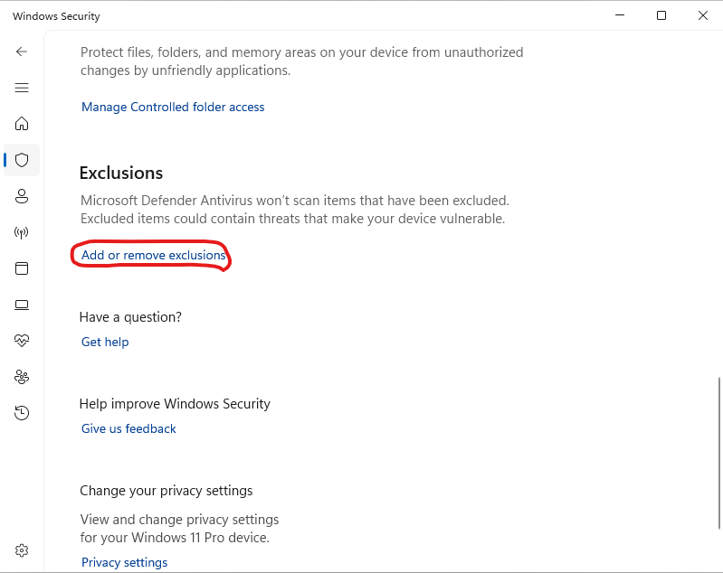

Приложение Windows: что делать, если Windows блокирует запуск
Примечание
Следующее относится к операционным системам Windows 10 и 11.
В настоящее время Windows требует от компаний-разработчиков или независимых разработчиков программного обеспечения цифровой сертификации своих приложений либо их распространения через Windows Store. В связи с этим рекомендуется обращаться к сторонним компаниям для получения цифрового сертификата стоимостью несколько сотен евро (см., например, https://learn.microsoft.com/en-us/archive/blogs/ie_fr/certificats-de-signature-de-code-ev-extended-validation-et-microsoft-smartscreen).
Поскольку я распространяю blunderDB бесплатно, я не хочу прибегать к этим дорогостоящим возможностям. Был изучен бесплатный путь, предназначенный для программного обеспечения с открытым исходным кодом (SignPath Foundation, https://signpath.org/), но заявка не была одобрена; поэтому двоичные файлы Windows не имеют цифровой подписи. Поэтому весьма вероятно, что Windows предупредит вас о потенциальной угрозе или даже полностью заблокирует запуск blunderDB. В следующих разделах описаны действия для обхода предупреждений Windows, а также как проверить целостность загруженного двоичного файла.
Предупреждение Windows SmartScreen
После загрузки blunderDB при его запуске Windows может отобразить предупреждение вида

Примечание
Этот снимок экрана сделан в англоязычной Windows. В русской версии Windows тот же экран называется Система Windows защитила ваш компьютер; ссылка, на которую надо нажать, называется Подробнее, а появляющаяся затем кнопка — Выполнить в любом случае.
В подавляющем большинстве случаев достаточно двух щелчков — Подробнее, затем Выполнить в любом случае, — и больше ничего делать не нужно: ни исключений в антивирусе, ни изменений настроек. Следующий раздел касается только тех редких случаев, когда блокировка исходила не от SmartScreen.
Если вы хотите разрешить запуск конкретного исполняемого файла, заблокированного SmartScreen:
Попробуйте запустить исполняемый файл:
При попытке запустить исполняемый файл SmartScreen может заблокировать его и отобразить предупреждение.
Нажмите «Подробнее»:
В окне предупреждения SmartScreen нажмите Подробнее.
Выберите «Выполнить в любом случае»:
Если вы доверяете исполняемому файлу, нажмите Выполнить в любом случае, чтобы обойти предупреждение SmartScreen для данного случая.
Блокировка Windows Defender
Этот раздел — крайнее средство, к нему следует прибегать, только если блокировка исходила не от SmartScreen. При некоторых настройках безопасности бывает, что даже после описанной выше разблокировки Windows Defender не даёт запустить blunderDB, выдавая сообщения вида

или

или даже поместить его в карантин.
Windows Defender известен случаями ложноположительных срабатываний. Эта проблема явно упоминается в FAQ на официальном сайте Golang (https://go.dev/doc/faq#virus) или в тикетах GitHub некоторых проектов на Go (https://github.com/golang/vscode-go/issues/3182).
Предупреждение
Исключить файл из антивирусной проверки — не безобидное действие: исключение распространяется на путь, и любой файл, помещённый затем в это место, тоже не будет проверяться. Сначала проверьте отпечаток SHA-256 загруженного файла (следующий раздел): именно он, а не исключение, подтверждает, что вы запускаете действительно опубликованный двоичный файл.
Если вы всё же хотите запретить Безопасности Windows анализировать blunderDB:
Откройте Безопасность Windows:
Нажмите Пуск и введите Безопасность Windows.

Перейдите в «Защита от вирусов и угроз»:
Нажмите Защита от вирусов и угроз.

Управление параметрами:
Прокрутите вниз и нажмите Управление параметрами в разделе «Параметры защиты от вирусов и угроз».

Добавьте или удалите исключения:
Прокрутите до раздела Исключения и нажмите Добавить или удалить исключения.

Добавьте исключение:
Нажмите Добавить исключение и выберите Файл. Затем перейдите к исполняемому файлу, который вы хотите исключить, и выберите его.


Проверка целостности загрузки (SHA256)
Каждый бинарный файл, опубликованный на странице releases, сопровождается файлом .sha256, содержащим его криптографический отпечаток. Проверка этого отпечатка позволяет убедиться, что загруженный файл подлинный и не был изменён, что является полезной гарантией при отсутствии подписи кода.
В Windows (PowerShell), в папке загрузок:
Get-FileHash .\blunderDB-windows-<version>.exe -Algorithm SHA256
Сравните отображаемое значение со значением из файла blunderDB-windows-<version>.exe.sha256. Они должны быть идентичны.
В Linux или macOS:
sha256sum -c blunderDB-linux-<version>.sha256 # Linux
shasum -a 256 -c blunderDB-macos-<version>.zip.sha256 # macOS